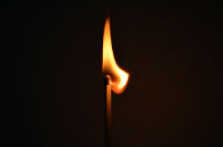

Welcome to How To Survive in the Wild!
This page is here to help the inner survivalist in all of us. When you are one with nature, you don’t need all that big, heavy, expensive equipment weighing you down. Have you ever gone camping and forgotten something important and thought the whole trip was ruined? I will teach you how to survive without it!
No fishing pole?

No problem. You’ll be chowing down on some nice tasty fish in no time.
Forgot your lighter or matches?
Don’t worry. You’ll be starting fires like Tom Hanks on a deserted island in no time.
Oh man! You forgot all your clean drinking water!

Well you didn't forget your chill pills and I suggest taking one now because I'll show you all the safe ways to get yourself hydrated in the wild.
I want everyone that has ever seen Bear Grylls on TV to realize how much fun it truly is to survive in the outdoors. Stay on my site for a while and I think you’ll find that it’s actually kind of fun to get away from “civilized life” for a while. Maybe, just maybe, even if you get lost and you know how to survive in the wild, you won’t want to be found!